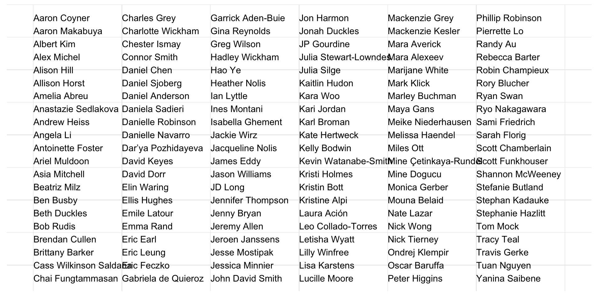

library(tidyverse)
gratitude <- readr::read_csv("gratitude.csv") |> arrange(First)
col_num <- rep(1:6, each=21)[1:nrow(gratitude)]
row_num <- rep(seq(1:21), 6)[1:nrow(gratitude)]
gratitude <- gratitude |> mutate(name=paste(First, Last), col_num = col_num, row_num=-row_num)
ggplot(gratitude) + aes(y=row_num,x=col_num, label = as.character(name), check_overlap=TRUE, hjust=0) + geom_text() + theme_minimal() + xlim(1,7) +
theme(axis.text = element_blank(), axis.title = element_blank(), panel.background = element_blank())The Value of Compassion in Learning Data Science
University of Pittsburgh Love Data Week
Ted Laderas
2/13/23
Bio
- Former academic that loves teaching
- Data Scientist/Bioinformatician 20+ years
- Not afraid of Clinical Data
- Bioinformatics Trainer at DNAnexus
- Psychological Safety for Everyone
- Ready for R
- Data Analytics
- Cloud for HPC Users
- Gradual Introduction to Shiny
- OHSU BioData Club
- Cascadia-R
- cvdRiskData
TL; DR
- You all are smart and brilliant people
- Don’t beat yourself up while learning
- Find your crew who you can learn with safely
- When possible, make things public
My Advice to Grow as a Data Scientist
- Have Values
- Meet people
- Learn Things Together
- Build Things Together
- Take Care of Yourself
- Share Things in Public
1. Have Values
Why Values?
- Values help you say yes
- Values Help you say no
My Values
- Curiosity (about learning and others)
- Compassion (for myself and others)
There is more than one path
- Question the PI model
- Collaboration is the most important
Be Compassionate and Gentle With Yourself
- Data Science is Hard
- Don’t Replay Negative Tapes
- Find people to Learn With
Learning Self-Talk from Students
It’s okay not to know how to do something, practice makes perfect!
It will be hard to learn, but so much fun and worth it.
Dedicate couple hours for practice a day
Learning Self-Talk
It’s going to be okay, it’s really overwhelming right now but Ted is patient and thorough.
It’s a good thing that you’re looking at multiple sources of information about R (i.e. a brief Code Academy stint, the KCRB R4DS group, R Bootcamp links), it will just serve to solidify the topics that get covered.
Don’t forget to Google, remember to ask questions.
This is What it Takes
The 5 minute rule for learning
- If something doesn’t make sense, take a walk or a break and come back to it.
It’s Dangerous to Learn Alone
- Use Social Learning to learn faster
- Having a group makes learning easier
2. Meet People
Who Should You Meet?
- Fellow Learners!
- Potential Collaborators
- Potential Employers
- “Weak Ties”
An Introvert’s Guide to Networking
- Networking is not about promoting yourself
- It’s about being curious about other people
- Finding common ground and seeing if you want to work with them
Be Curious About Other People
- Practice Informational Interviewing
- Don’t overthink your questions
- Be genuinely interested in what people do
- Don’t limit yourself to your field
Do or Attend Lightning Talks!
- Lightning talk: 5-10 minute invitation to chat
- Best way to advertise what you’re interested in
- Best way to meet people with your same interests
Volunteer at Conferences
- Low-key way to meet people
- Working on things together is super helpful
- Example: TA for Building Tidy Tools Workshop

3. Learn Things Together
Compassion = Psychological Safety
Psychological safety is being able to show and employ one’s self without fear of negative consequences of self-image, status or career.
Psychological Safety -> Effective Learning
You need to find it for yourself
Start or Join a Group!
- Find your like minded peers
- Help each other learn
- Find groups that have Codes of Conduct
Why are Codes of Conduct Important?
- Establishes the tone for the group
- States unacceptable behavior
Example: OHSU BioData Club
- Started as a group that wanted to learn more data science
- Everyone is Equal (PhD, Postdoc, Faculty)
- Working through problems together

BDC: Learners as the best teachers
- You remember how hard it is to learn
- Coaching/pedagogy
The best teachers
{.fragment width=600}
The best Teachers
{.fragment width=600}
The Best Teachers
{.fragment width=600}
The Best Teachers
{.fragment width=600}
What did we learn?
- It just takes a desire to learn
- Coaching/Pedagogy is important
- Faculty Sponsorship is Vital
Other Learning Opportunities
Tidy Tuesday
- Weekly Dataset
- Learn from other’s code
- Share your visualizations/code
- #TidyTuesday #RStats
R for Data Science Learning Community
Data Visualization Society
CSVConf

The Carpentries

Mozilla Open Leaders
https://foundation.mozilla.org/en/initiatives/mozilla-open-leaders/
4. Build Things Together
Compassion in Teaching
Collaboration is Fun and a Vital Skill
- Academic Consortia
- Open Science
- Industry
- It is everything
My Rule for Collaboration
If I meet you and we hit it off, we should work on something together.
Cascadia R Conf: Empower Others
We started with 6 people and got this
R-Bootcamp
Ready for R
- Free for all!
- Leverage Posit Cloud (free)
- Videos
- Notebooks
Testimony
As a person fairly new to R, and someone who is slowly completing your Ready for R course, I appreciate your explanations. I have some pre-existing knowledge of R, but this is a great way to reinforce my learning. Thank you!
Testimony
Taking this course has explain[ed] SO many things and made so many things clear. Even just understanding organizing data or file paths. It was a lot of things I didn’t have the language or understanding to ask about
Testimony
I am very happy that because of this class I can build up my self-confidence to work in R. It helps me a lot. With the help of all the exercises, I can practice R on my own data too. Thank you so much. Want to learn more :)
Survey Results
Survey Results
Lots of Users All Over the Place!
5. Take Care of Yourself
Managing Up
- Communicating with your manager what you need
- Educating them about what they’re curious about
You Can’t Please All 6 of Your Bosses
- During COVID
- I put together 5 new classes in 1.5 years for different departments
- Also on 3 other grants (lots of other work)
- I needed something new
You are a Limited Resource
- Use your values to decide whether something is worth focusing on
- Use your values to explore possibilities
- Be compassionate for yourself, because no one else will
Managing Burnout
- Burnout is a systemic bug
- Needs to be managed at multiple levels
- You by yourself can only go so far
Look for Alternatives
- Asking around
- Cohort of people in my network
- Comparing Notes
- Weak Ties
- Lead to DNAnexus
DNAnexus Academy
- Being confused is part of my job
- Asking Questions
- Product
- Customers
UK Biobank RAP community
- 500K Participant Dataset
- Genomics on the cloud
- Plan learning paths
From HPC
To Cloud
Bash for Bioinformatics
6. Share Things
The Unreasonable Effectiveness of Public Work
Yes, but…
- Social Media is a Double-Edged Sword
- Especially for BIPOCs
- Your mental health matters
- Be aware and use blocking tools
Low-key Share Your Work
- Tidy Tuesday
- Data Science Portfolio
Slack/Discords
- R for Data Science
- Data Visualization Society
Is Twitter Worth it Anymore?
- Yes, but…
- With Caveats (blocking)
Coming Back to the Beginning
My Advice to Grow as a Data Scientist
- Have Values
- Meet people
- Learn Things Together
- Build Things Together
- Take Care of Yourself
- Share Things in Public
Expressing my Gratitude
Thank You (ggplot version)
Gratitude Code
- Thanks to everyone for inspiring me and/or your chats!
Questions?
- @tladeras
- https://laderast.github.io
- @tladeras@mastodon.cloud